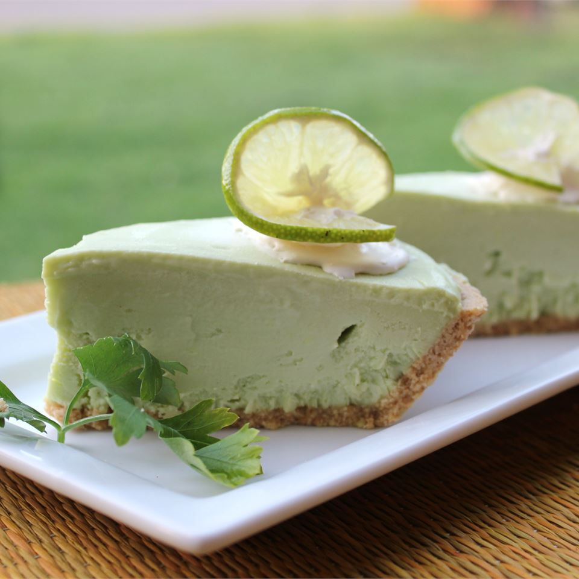

Avocado Lime Cheesecake

Description
I love Mexican food, but I think Mexican desserts are limited. Flan is great, but not every time. This Mexican-inspired avocado and lime cheesecake recipe is unique, easy, and fabulous. My friends constantly ask me to make it. You must have an ice cream maker.
Ingredients
- 1 ½ cups heavy whipping cream
- ¾ cup white sugar
- 1 ½ ripe avocados, peeled and pitted
- 2 (3 ounce) packages cream cheese, softened
- ½ cup fresh lime juice
- 1 (8 inch) prepared graham cracker crust
Steps
- Heat cream in a small saucepan until small bubbles appear around the edges. Remove from the heat and stir in sugar until it dissolves. Transfer mixture to a medium bowl and allow to cool, about 10 minutes.
- Blend avocado and cream cheese in a food processor until smooth. Add lime juice and process until smooth.
- Whisk blended avocado mixture into cooled cream mixture, then pour into an ice cream maker. Freeze according to the manufacturer's instructions, about 20 minutes.
- Spoon avocado mixture into the prepared pie crust; smooth the surface with a spatula. Freeze until solid, at least 2 hours. Let cheesecake sit at room temperature until slightly softened yet firm enough to slice before serving, 10 to 15 minutes.